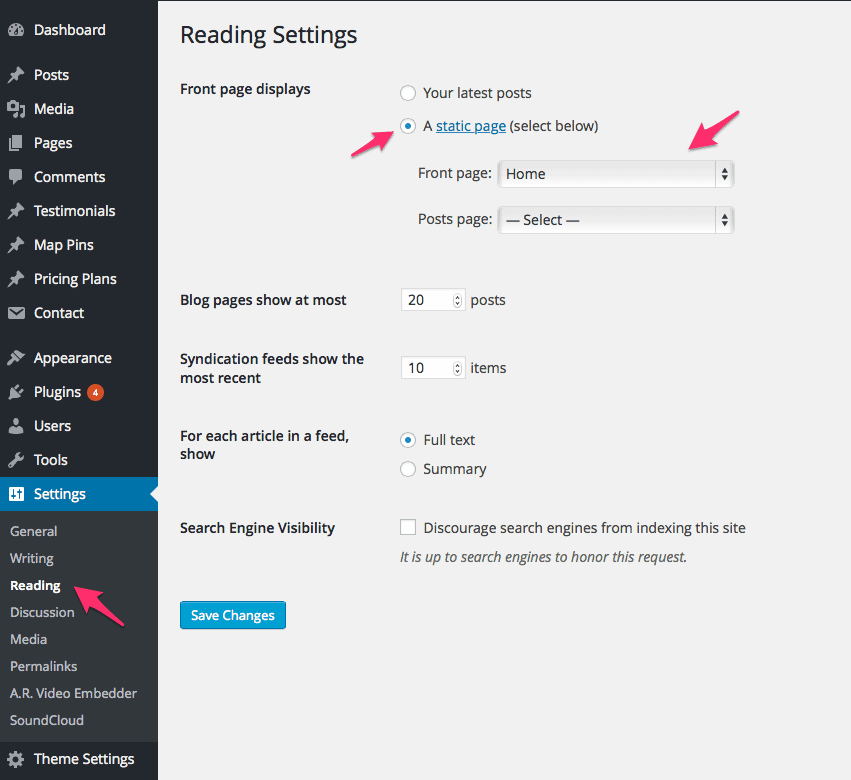
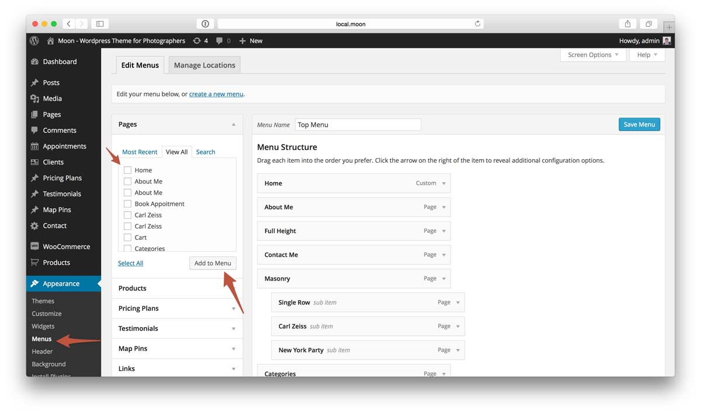
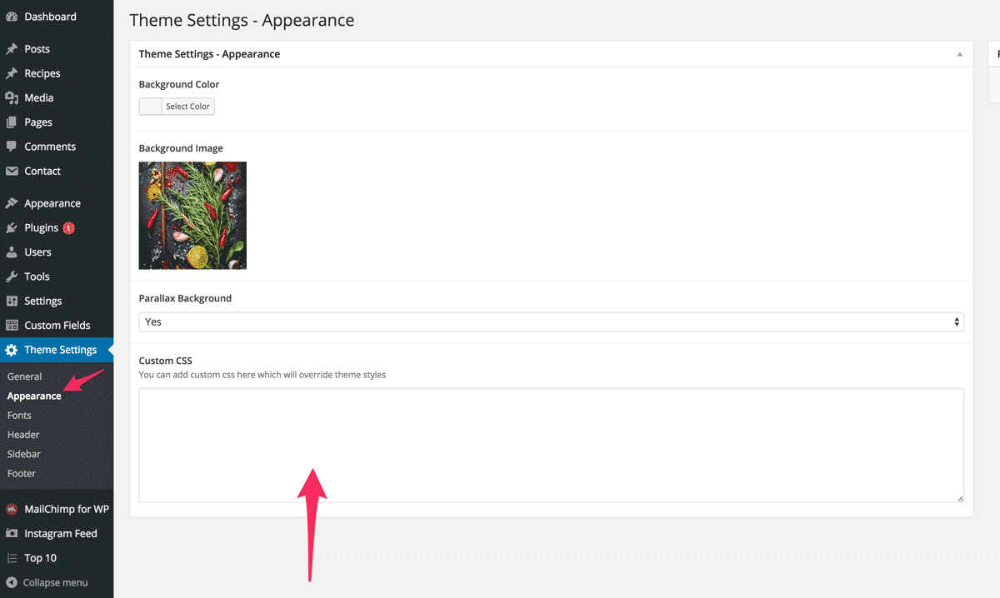

Osetin Themes | 2015
User Manual
Wordpress Theme "Neptune"
Extensive documentation guide version 1.0.0
Welcome
Thank you for the purchase of our premium theme Neptune. We will walk you through the installation and setup of this theme. Hold tight, it will be quick and easy.
Topics:
- Installing the theme
- Importing Demo Data XML
- Theme Requirements
- Creating Recipes
- Recipe Ingredients
- Recipe Steps
- Recipe Nutritional Data
- Setting up a homepage
- Creating Navigation Menu
- Contact Page
- Page with Categories
- Category Settings
- Theme Translation & Multilingual
- Adding Links to Social Networks
- Customizing Theme Appearance
- Updating theme "Neptune"
- Updating Included Premium Plugins
- For Developers
- Frequently Asked Questions
- Changelog & Updates History
Installing the theme
Video Guide
We've created a quick video guide to show you how easy it is to install "Neptune". If video does not work for you or you need a different method of installation, try reading below for other methods of installation.
Step by Step guide
Method 1 (Recommended): Installing using Admin
You can install Neptune to your website by using the Add New Themes option in the Appearance sub-menu.
- Log in to the WordPress Administration Panels.
-
Select the Appearance panel, then Themes.
- Select Add New.
-
Use the Upload Theme link on top to upload a zipped copy of a Theme that you have previously downloaded to your machine. File to upload is called neptune-by-osetin.zip, it should be located inside of the archive you downloaded from ThemeForest
-
When Wordpress finishes installing the theme and outputs a "Theme installed successfully" message, click Activate link.
- That's it, now the theme is installed & activated.
Method 2: Installation by using cPanel
If your host offers the cPanel control panel, and the Theme files are in a .zip or .gz archive follow these instructions. Note: This assumes the Theme you download is a compressed (.zip) file containing a folder under which all the Theme files reside.
- Download the Theme .zip file to your local machine.
- In cPanel File Manager, navigate to your Themes folder. If your WordPress is installed in the document root folder of your web server you would navigate to "public_html/wp-content/themes" and if you have WordPress installed in a sub-folder called wordpress, you would navigate to "public_html/wordpress/wp-content/themes".
- Once you've navigated to the Themes folder in cPanel File Manager, click on Upload file(s) and upload that .zip file you saved in Step 1.
- Once the .zip file is uploaded, click on the name of that file in cPanel, then in the panel to the right, click on "Extract File Contents", and that .zip file will be uncompressed.
- Follow the instructions below for selecting the new Theme.
Method 3: Installing "Neptune" Manually (FTP)
To add a new Theme to your WordPress installation, follow these basic steps:
- Download the Theme archive and extract the files it contains. You may need to preserve the directory structure in the archive when extracting these files. Follow the guidelines provided by your Theme author.
- Using an FTP client to access your host web server, create a directory to save your Theme in the wp-content/themes directory provided by WordPress. For example, a Theme named Test should be in wp-content/themes/test. Your Theme may provide this directory as part of the archive.
- Upload the Theme files to the new directory on your host server.
- Follow the instructions below for selecting the new Theme.
Importing Demo Data XML
This is an optional step. You can import a demo data to play around with and learn the features from a demo. You have to download a demo data xml file first. You can download it by clicking here. It is also included with the theme download and located in "Extras" folder. There is also demo data for widgets that you see on a demo. To install demo data for widgets you need a plugin called "Widget Importer & Exporter", you can download it by clicking here.
To import a demo data, follow these steps:
- Install all the plugins you want to use on your site, our demo data includes following plugin data (this is optional, if you dont want some of these plugins - do not install them):
- Mailchimp for Wordpress - newsletter widget
- WooCommerce - ecommerce/shop plugin to sell stuff on your website (optional)
- Contact Form 7 - it is used to build the "contact me" page
- Instagram Feed - used for instagram widget you see in the footer sidebar
- Top 10 - Popular posts plugin - used for popular posts widget and view counter
- Advanced Responsive Video Embedder - only used if you are going to add video recipes
- Widget CSS classes - this plugin is used to add "with-ribbon" class to a widget if you want it to have a ribbon behind a header
-
Now you are ready to install demo data. Login to Wordpress Admin Panel > Tools > Import page.
- Select "Wordpress" from a list of available import formats (it may ask you to install it if you have not done so before).
- Click Choose File
- Select a file called neptune-by-osetin-demo-data.xml that you've just downloaded and start importing content, it may take some time to import all the photos so do not refresh or navigate away from a page until you see a success message.
- By now you should have all demo posts data installed to your site, now if you want to import widgets that you see on our demo to your site you will have to install Widget importer & exporter plugin. Once it is installed - go to Tools > Widget Importer & Exporter > Download the widget demo data file by clicking here and then click "Import Widgets". That should import demo widgets into your site.
-
Now you have to assign a menu to be used on your website. Admin Panel > Appearance > Menus > Manage Locations tab and from a select box choose a Top Menu for Top Menu field and Footer Menu for Footer Menu field and click Save Changes button.
-
Final step is to set page called "Homepage" to be used as a homepage. To set it as your homepage, go to Admin Panel > Settings > Reading and set your "Front Page Displays" to be A Static Page with the "Homepage" selected from a "Front Page" select box.

- That's it, now you should have demo data installed.
Theme Requirements
Theme Neptune requires WordPress installed on your host. To run WordPress your host just needs a couple of things:
- PHP version 5.4 or greater
- MySQL version 5.5 or greater
That's really it. We recommend Apache or Nginx as the most robust and featureful server for running WordPress, but any server that supports PHP and MySQL will do. That said, we can't test every possible environment and each of the hosts on our hosting page supports the above and more with no problems.
Ask for it
Here's a letter you can send to your host; copy and paste!
Creating Recipes
Once you have installed your new theme it's now time to add some recipes.
To create a recipe:
- Click the 'Recipes' tab. Click the 'Add Recipe' sub-menu item.
- Start filling in the blanks: enter your recipe name in the upper field 1, and enter your recipe main content 2 in the main post editing box below it.
- You can make featured posts slider appear on top of your recipe page 3 by clicking on the related checkbox.
- There is an option to set a custom background image for your recipe 4, this will help make recipes more attractive and unique. You can also select the background image to have parallax effect 5, this way it will slide slightly slower or faster then the actual recipe content, which will make a pretty cool immersion effect.
- Pick a layout type for the recipe page 6.
- There is a field to assign a quick description for a recipe 7, it is the one that appears in quotes on a single recipe page.
- Fields 8, 9, 10 allow you to select additional attributes for the recipe like "serves", "recipe difficulty" and "cooking time".
- 11 Allows you to add ingredients to your recipe. Read more here.
- 12 Allows you to add steps to your recipe. Read more here.
- 13 Allows you to add nutritional information to your recipe. Read more here.
- As needed, select a category 15, add tags 16, and make other selections from the sections on the right hand side of the post.
- You can also define custom features for your recipe 17, those are useful for something like "spicy", "vegan", "gluten free" etc...You can add those in Admin -> Recipes -> Feature menu.
- When you are ready, click Publish. 5
Recipe Ingredients
You can add a list of ingredients to your recipes. On the recipe edit screen, there is a section titled Ingredients.
To add an ingredient just by click the Add Ingredient 4 button you can add an ingredient to your recipe. Each ingredient should have a name 1. You can also add amount of ingredient needed for the recipe 2. There is also a checkbox called Separator 3, when checked - the selected ingredient will act as a separator, it can be useful if you have different ingredients say for salad and souce in a single recipe, this way you can split them in multiple categories.
Recipe Steps
Each recipe can have multiple steps. It is super convinient to split a hard and long recipe into smaller steps in order for your site visitors follow recipe process easier.

On the recipe edit screen there is a section called Steps. Clicking Add Step button 6 will add a new step. Each step can have a title 1, duration a step preparation takes 4, step description 2 and "step has images" checkbox 5. Checking this checkbox will show an image uploader field 3 where you can select images for this step from your media library or upload new ones.
Recipe Nutritions
Our theme has an option of adding nutritional information to each recipe. You can assign as many of nutritions as you want, there is no limit.
On the recipe edit screen you will see a section called Nutritions. Clicking the Add Row button 3 adds a new nutrition to the recipe. You can assign it's name 1 and set a value 2.
Setting up recipes homepage
If you want to set a custom layout for your homepage (as you see on a demo) and/or show featured recipes slider and/or sticky posts roll you have to create a new blank page using template called Recipe Index, you can set a template for the page on the right hand side panel called "Page Attributes" 1.
On the page edit screen you will also have an option to turn on the Featured Recipes and Sticky Posts sliders. In order to add a featured recipes slider you have to check the Show featured recipes slider checkbox 2 and when you click it - you will see a multi-select field where you can assign recipes to be "featured" in that slider 3.
Same goes for the sticky posts, you can select posts you want to be sticky at the top 4.
There is a field called Layout type for index/archives 5, it will define what type of layout you want to show posts in on this page.
Now when you've created that page and selected posts you want to show, you will have to go to "Settings" > "Reading" and select this page as a static page to use for your homepage.
Creating Navigation Menu
Next step is creating a menu so that your users can naviagate through your website.
Step 1: Defining a Menu
You must define a menu before you can add items to it.
- From the 'Appearance' menu on the left-hand side of the Dashboard, select the 'Menus' option to bring up the Menu Editor.
- Select Create a new menu at the top of the page
- Enter a name for your new menu in the Menu Name box
- Click the Create Menu button.
- Your new custom menu has now been defined.
Step 2: Adding Items to a Menu
You can add different link types into your menu, these are split between panes left of the menu you're currently editing.

- Locate the pane entitled Pages.
- Within this pane, select the View All link to bring up a list of all the currently published Pages on your site.
- Select the Pages that you want to add by clicking the checkbox next to each Page's title.
- Click the Add to Menu button located at the bottom of this pane to add your selection(s) to the menu that you created in the previous step.
- Click the Save Menu button once you've added all the menu items you want.
- Your custom menu has now been saved.
Step 3: Adding Your Menu to Your Site
- Scroll to the bottom of the menu editor window. Section called Menu Settings
- In the section titled Theme locations, click the check box for the Header Menu field.
- Click Save Menu once you've made your selection.
- Repeat the same steps for the Footer Menu.
Contact Page

You can add contact page with a map and a contact form to your site. Visitors will be able to leave you a message with their email address and other fields like phone number, name etc. you select.
To create a new page which will have the contact form and a map follow these steps:
- Download & Install free Contact Form 7 plugin which will be responsibe for contact form generation.
- Create a new contact form by going to Wordpress Admin > Contact > Add New, then select fields you want to show on the form.
- Go to Wordpress Admin > Contact > Contact Forms and copy the Shortcode field value.
- Create a new page by going to Pages > Add New and using a default template.
- Add title, content (included the copied shortcode from step 3).
- Now click Publish and that's it.
Page with Categories/Custom Links
You can create a dedicated page to list your categories with a nice background for each tile. You can also set a custom URL to send user when they click on a tile. You can also set a tile name and add custom description for it, and of course set a color scheme fader on hover for each tile.

This page's layout can be also modifed in anyway you want, select columns, rows count or sizing, and it will take care of the rest. It will make tiles responsive, so depending on how big is a tile it will modify its contents font sizes and information that is being visible.
To create a page which will list your categories or links you have to create a new page from Wordpress Admin > Pages > Add New, then select a "List Categories" template from a dropdown in the Page Attributes panel on the right, publish this post and that's it.
Theme Translation & Multilingual
Translating theme to your language
In order to change language please follow these guidelines or this guidelines ( these are the best in my opinion). Anyway I will post a short guideline here as well, it should be pretty ease, all you have to do is to follow standard Wordpress guidelines for changing the language in a theme:
- Open "languages/default.po" file with PoEdit app (http://poedit.net/) and translate the strings you want to your language.
- Save the translated .po file to the same "languages" directory by the appropriate name (e.g. if you are translating to French you have to use the filename fr_FR.po ) for a full list of languages please see this document
- Final step is adding:
define ('WPLANG', 'fr_FR');to the "wp-config.php" file located at your WordPress installation root folder.
Translating Recipe Submission/Edit form
In order to translate the recipe submission/edit form you need to go to admin -> custom fields -> "sync" all the available fields and then you will see the "Recipe" link there, click it and edit field labels IMPORTANT!!! Do not edit the "field name" field, it will break the site logic.
See screenshots below:
Adding Links to Social Networks
You can add social icons to your website. They will appear in the header below top menu, footer and special widget in a sidebar.
- In order to add social network to your website go to Theme Settings > General > Social Media tab.
- Select Yes in the Show Social Icons in Header and/or Show Social Icons in Footer select boxes depending on where you want to show them
- Click Add Row button.
- Select Service name.
- Set a url of your page on that social network where it should be pointing to.
- That's it, now you should see a social networks appear on your site.
Customizing Theme Appearance
Customizing theme appereance is incredibly ease and won't require any coding knowledge. The idea is that you have global and per page/post settings. You can set global settings on Theme Settings pages in admin. Those settings will be used as a default settings for all pages and posts.
However if you want to modify appearance of some of your posts/pages to be different from defaults you've set in Theme Settings you can do so on the page/post edit screen.
Updating theme "Neptune"
We will try to cover theme update process in detail, just follow steps below, it should be pretty easy.
Back Up Your Theme Files
First thing’s first – before we get started you need to back up your database and your current theme. Since we’re replacing and updating theme files, there’s a chance something could go wrong so it’s best to play it safe and have a backup.
Use whatever method you feel most comfortable with. You may want to simply copy your entire WordPress directory to your computer using FTP and backup your database with a plugin. You may have a VaultPress account or a membership with some other third-party backup site that does all the hard work for you.
Uploading and Replacing an Existing Theme
It is required that you manually upload a new version of a theme and replace an older version in order to upgrade it.
However, if you go to Appearance > Themes > Add New and try to upload a new version of a theme that is already in your site's themes directory, it will fail and you’ll get an error message telling you the destination folder already exists.
The reason for this error is due to the fact you can't have two folders in your themes directory with identical names.
There are a couple of simple solutions:
Login to your site via FTP or cPanel and delete the old theme and then upload the new version. Make sure you make a backup of the old version of your theme just in case something goes wrong.
If deleting your old theme makes you nervous, another option is to rename the old version of the theme. This will allow you to successfully upload the new version of the theme.
- Login to your site via FTP or cPanel and navigate to wp-content/themes/ and find your old theme (folder called neptune-by-osetin).
- Rename your old theme something like "neptune-by-osetin-old".
- Upload your new theme.
The old and new versions of the theme will both appear in the themes interface, but you will be able to distinguish them by their folder names and version numbers.
Updating Premium Plugins inside a theme.
This theme comes with two premium plugins: UserPro and ACF pro. Userpro has a license code that you can see in the "Documentation" folder of your download, and you need to enter it on UserPro activation page in wordpress admin. For ACF Pro, updates are included in the latest theme version download, they are located in the "inc/plugins" folder of the theme itself. If you dont want to wait for a theme update and want always get the latest version of each plugin - you can register for an account on http://pinsupreme.com by clicking "Menu" button on top right and selecting "My Account" item. Then once you create an account - you can add your purchase code there which will allow you to download latest version of the included premium plugins without waiting for TF updates.
If you have an older version of the ACF Pro and it asks about a licence code to update itself - ignore it - delete the plugin and install it again either by following the guides on the top of the wp admin or manually installing it from the "inc/plugins" folder of the theme.
For Developers
This section is for advanced users who want to customize a default behaviour. We will explain you how to edit php files and stylesheets.
Child Theme
If you want to make changes to default behaviour of the theme and modify default .php files without losing those changes on theme updates, the best way to do it is by creating a child theme and overriding default behaviour.
We have included a basic child theme in a download package that you received from ThemeForest. Folder is called neptune-by-osetin-child. You will have to upload that child theme folder to your wp-content/themes folder. If you want to override a layout of a php file you find in a theme Neptune, all you have to do is create the same file with your modifications in a neptune-by-osetin-child folder (if a file is located inside an extra directory, you will have to create that directory as well). Now theme Neptune will use that file instead of the original one.
Modifying theme's functions.php file
Unlike style.css, the functions.php of a child theme does not override its counterpart from the parent. Instead, it is loaded in addition to the parent’s functions.php. (Specifically, it is loaded right before the parent’s file.)
In that way, the functions.php of a child theme provides a smart, trouble-free method of modifying the functionality of a parent theme. Say that you want to add a PHP function to your theme. The fastest way would be to open its functions.php file and put the function there. But that’s not smart: The next time your theme is updated, your function will disappear. But there is an alternative way which is the smart way: you can create a child theme, add a functions.php file in it, and add your function to that file. The function will do the exact same job from there too, with the advantage that it will not be affected by future updates of the parent theme. Do not copy the full content of functions.php of the parent theme into functions.php in the child theme.
If you want to override one of the function of the theme Neptune, all you have to do is create a function with the same name in the child theme's functions.php file, that will prevend a parent theme from loading an original function.
Modifying theme stylesheet variables
You can override default LESS css variables by modifying either /extend/php-variables.php or /extend/less-variables.less file. Make sure you backup those files if you made changes to them before you decide to update the theme, then when you finished updating put them back into respective folders in the updated theme to preserve changes you've made.
Overriding theme's css
You have two options of overriding default theme's styles. First is to do it via Admin > Theme Settings > Appearance tab > enter your LESS or CSS code into the textarea for "Custom CSS".

Second option is to type in your custom styles into the /extend/custom-styles.less file. Make sure to backup this file contents before a theme update, and put it back after you udpated the theme to preserve the modifications you've added.
Frequently Asked Questions
When I am trying to install this theme, a message appears "The package could not be installed. The theme is Missing the style.css Stylesheet.
After you've purchased theme Neptune from ThemeForest, you will receive a package in a zip file. You are not suppose to upload the whole package. This package contains not only the theme itself but also documentation, child theme and licensing info. First of all, you should unzip it using winrar or winzip, and you will see the real theme zip folder that is inside, called neptune-by-osetin.zip. This is the theme zip file you have need to install and activate instead.
How do I customize css styles for this theme?
You can add your custom CSS to the CSS Styles field in Admin > Theme Settings > Appearance > Customize tab > enter your LESS or CSS code into the textarea.
I see that you are using a LESS instead of a regular CSS, what is that?
This is basically the same as CSS just with some extra features like support for variables and mixins. You can use regular CSS in .less files and it work just fine. However if you want to take advantage of all the cool features of LESS, you can read more about it here: http://lesscss.org/
Images do not appear on full hegiht posts or some other pages or I am seeing a "Division by zero" error.
Try disabling "Jetpack" plugin if you have it installed, it messes up an output sometimes and prevents image sizes to be calculated.
I have installed and activated the theme but when I visit my website it shows a blank screen OR an error Fatal error: Class 'lessc' not found less-variables.php".
Make sure you are running at least PHP version 5.4 on your server.
Where do I find license codes for included premium plugins like UserPro and UserPro Bookmarks add-on?
You can find them in the "Documentation" folder of your download from ThemeForest, file called "license-codes.txt".
How do I update ACF Pro plugin?
Latest version of the ACF plugin is included in the theme update. If you have an older version of the ACF Pro and it asks about a licence code to update itself - ignore it - delete the plugin and install it again either by following the guides on the top of the wp admin or manually installing it from the "/inc/plugins" folder of the theme.
Changelog & Updates History
You can see a full changelog here